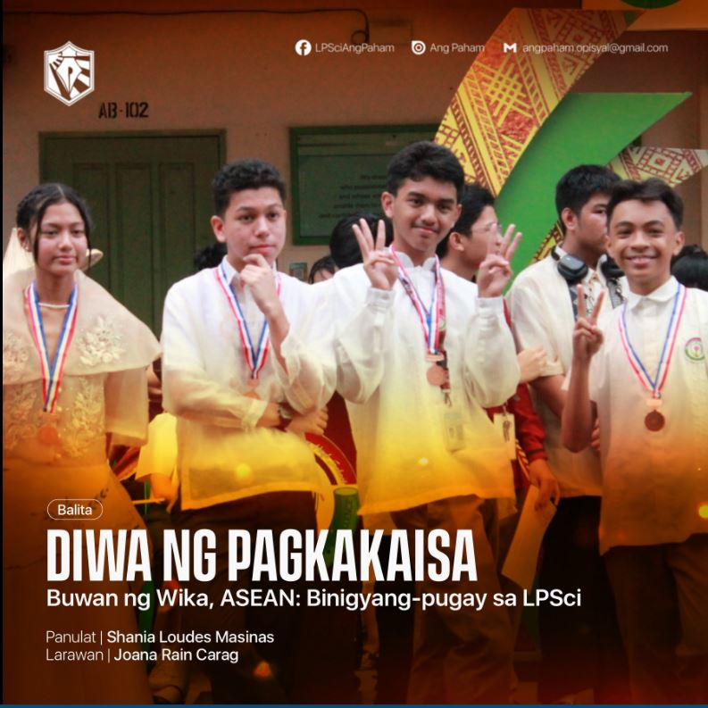
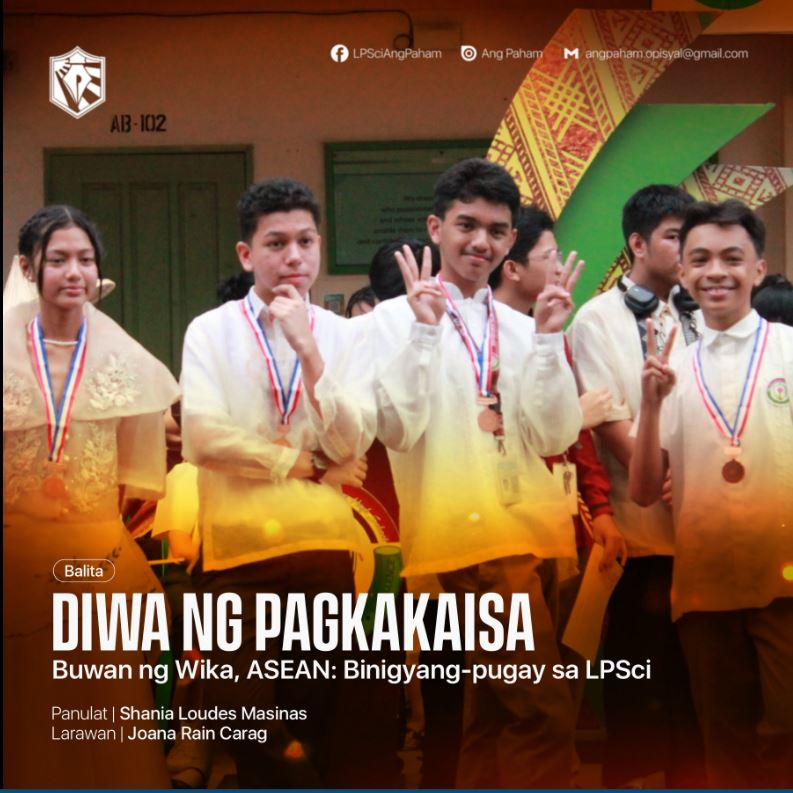

Reflection Questions and Answers
1. What is the most important thing I learned from the event?
The most important thing I learned from AP Month is the importance of understanding our history, culture, and national identity. The event helped me appreciate how the lessons in Araling Panlipunan connect to real-life issues such as patriotism, citizenship, and social awareness.
2. How can I apply what I learned in real-life situations?
I can apply what I learned by being a more responsible and informed citizen. I will stay aware of current events, respect our culture and traditions, and participate in activities that promote community involvement and national pride.
3. Did I actively participate in the event? How?
Yes, I participated by joining group activities such as quiz bees and poster-making contests that focused on Filipino heroes and historical events. I also helped in decorating our classroom with national symbols and meaningful quotes about patriotism.
4. If I were to teach this topic/subject to a classmate, how would I explain it?
I would explain that AP Month celebrates our country’s history and culture. It reminds us that learning about the past helps us make better choices for the future. The subject encourages students to appreciate our heritage, know our rights and duties, and take part in nation-building.
5. Why is it important to have an event (per subject)? Explain your answer.
It’s important to have events like AP Month because they make learning more engaging and meaningful. These events allow students to express their knowledge creatively, strengthen their love for the country, and deepen their understanding of the subject beyond textbooks.
Event Documentation
AP Month was celebrated through interactive activities that highlighted Filipino culture and historical awareness. Students prepared exhibits, posters, and performances showcasing national heroes and historical events. The program encouraged everyone to take pride in being Filipino and to apply the values of unity, discipline, and patriotism in everyday life.
 
